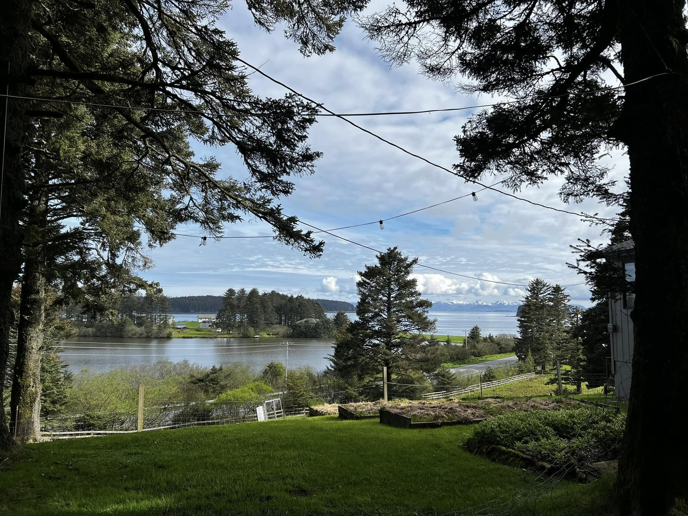

Board Oversight
Independent board sets strategy and reviews financials.

Monique, I.N.K. (Intercessors Need Knowledge), Inc. operates exclusively for charitable purposes under Internal Revenue Code 501(c)(3). EIN: 20083651. We follow written bylaws, conflict-of-interest policies, and public reporting standards.
Independent board sets strategy and reviews financials.
Scopes, eligibility, outcomes, and key metrics are published.

Governance education and training support continuous improvement.